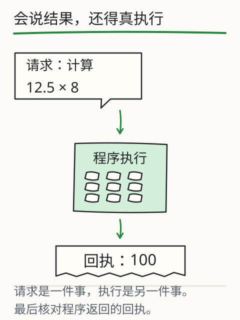
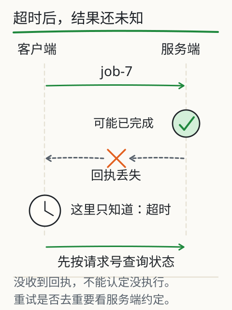

怎样让模型调用工具？
单价 12.5，买 8 件，总价多少？你问模型，它写：“我帮你调用计算器，结果是 100。”数字对了，可你现在能确认计算器真的运行过吗？

把一句“算好了”拆成三个动作就容易查了：模型提出请求，程序检查并执行，回执把结果送回来。最后这个 100 应该能追到一次实际执行。
下面已经准备好乘法请求。逐步推进，在你觉得“现在才真正算过了”的那一步停一下，看看状态和回执发生了什么变化。

请求什么时候才变成结果？
编辑后点“装入请求”开始新一轮。模拟超时由所选场景控制。
请求是课程预置或你编辑的 JSON，不是模型刚生成的。没有联网、发送消息或执行任意代码。采用 JavaScript 浮点数，不是财务精度引擎。超时为教学模拟。
请求先交给程序检查
请求里有工具名和参数，像一张交给执行程序的单子。真实工具调用可以由模型提出这张单；应用收到后，判断是否允许，执行对应程序，再把工具返回值放进后续上下文。
这里的单子由课程预置，你也可以编辑 JSON。执行器只接受 calculator，加、减、乘、除四种运算，两个操作数都必须是有限数值。试着把一个数字改成字符串“2+2”：它不会把这段文字当代码运行。
失败要留在结果里
换成除零，再逐步推进。数字类型能通过校验，执行却得不到这台计算器接受的有限结果。失败发生在后面，最后就该保留失败，不能照常写一段“已完成”的摘要。
再试未知工具、无效参数和模拟超时，找找它们分别停在哪一步。超时是本地预设分支，没有真的等待远程服务；它让你先看清收到失败回执后，流程应该怎样停下来。
点击取消，本轮就不再推进，重置后才开始新一轮。这份练习最多执行一次工具请求，进入成功、失败或取消等终态后按钮停用，继续点击也不会重复执行。
计算正确，还要检查参数
回到成功的那次：12.5×8=100 没算错。如果价目表上的单价其实不是 12.5 呢？计算器并不知道。你还得核对单价、数量和单位的来源；工具负责把传入的数据按规则算完。
还可以试 0.1+0.2，结果可能带着很长的小数尾巴。这来自所用的 JavaScript 浮点数表示。真实金额结算需要合适的数值表示与舍入规则，教学计算器没有代替你解决这件事。
在实际模型里区分两种现象
把同一道题交给 DeepSeek V4.1 Flash 或 Kimi K3 时，可以继续问：产品启用了什么工具，传了什么参数，实际回执在哪里？回答中的“调用了计算器”只是文字，要有这些执行记录才能确认发生了什么。
自己接 API 时，需要由应用实现校验、执行、回传和停止。工具消息怎样写，要查所用接口的说明；课程没有替这两个模型填写未经核验的调用字段。
从“我算好了”到真正的结果，中间隔着程序
把乘法过程倒着查一次。你看到的 100 来自哪里？来自程序把 12.5 与 8 相乘；执行前，它还检查了运算名、字段与数值范围。模型可以提出何时调用、传哪些参数，应用决定是否允许并执行，回执记录实际发生的事。即使 JSON 写得完全正确，也还差真正执行这一步。

继续往前追，单价 12.5 的依据在哪里？没有依据，后面的乘法再准确也帮不了你。因此，核对要走完整条路：“数据出处→解析出的参数→程序执行→结果回执”。最终数字只是路的终点。
现在把远端回执遮住。页面一直没收到结果，背后至少可能有两种情况：请求根本没到，或者服务端已经做完，只是回执没回来。客户端看到的都是超时，实际发生的事却可能不同。

如果动作会改变外部状态，立刻重来就可能做第二遍。先按请求 ID 查询状态，再决定是否重试。同一个 ID 有助于避免重复执行，也有前提：服务端确实实现了对应的去重或幂等约定。给请求起一个编号，本身并不能防重。
每次调用还要受次数、时间和权限约束。只读查询与发送、删除所需授权不同，资料中的一句命令也不能自行扩大权限。本课只做本地教学执行，没有真的发消息或创建远端工单；图中远端超时用来说明两种可能，并非一份实际服务日志。
工具服务或 Agent 协议约定怎样连接、传消息和报告状态，不能替你保证结果正确。接通 MCP/A2A 后，版本、参数、执行状态和产物仍要逐项核对。要看具体协议，可以回查本课的深入图和完整参考页。
再深一层
刚才走过的“请求、校验、执行、返回、结束”，是一轮有限状态流程；失败和取消也各有自己的结束原因。多步系统还要规定最多调用几次、等多久、何时能重试、怎样防止重复动作。涉及现实写入时，实际动作必须落在授权范围内。接下来的超时图里，你会看到为什么“没收到结果”还不能直接判成“没有执行”。